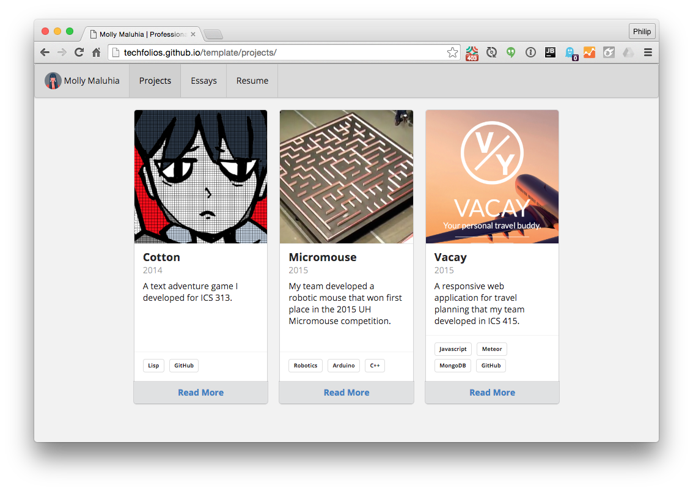

Create modern, responsive technical portfolio sites fast!
If you have ever tried to build a technical portfolio site using a blogging platform such as WordPress, you know it takes time and the results are not always satisfactory.
The goal of TechFolios is to provide a quick and easy way to build a high quality technical portfolio site, while still enabling custom layout if desired.
Sites built with TechFolio have the following components:
- A home page with basic biographical information;
- A projects page with pointers to subpages or external sites.
- An essays page highlighting your technical writing.
- A resume page presenting your online resume.
- Links to your professional network sites.
Provide details using JSON Resume
You provide basic biographical information using JSON Resume format. JSON Resume is a developer-driven, open source initiative to provide a JSON-based standard for resumes.
TechFolio uses your JSON Resume data to build both the home and resume pages.
Using JSON Resume has advantages: if you prefer, you can format your resume using a JSON Resume Theme. In addition, an open standard might make it easier for you to reuse your biographical data in other contexts.
Content first, style later
With TechFolio, the prebuilt themes are purpose-built for technical portfolios. Unlike blog platforms like WordPress, this means that you can focus solely on content when creating the initial release of your site.
Later, as you get more comfortable with the system, you might decide to tailor the look-and-feel to more closely align with your personal style.
